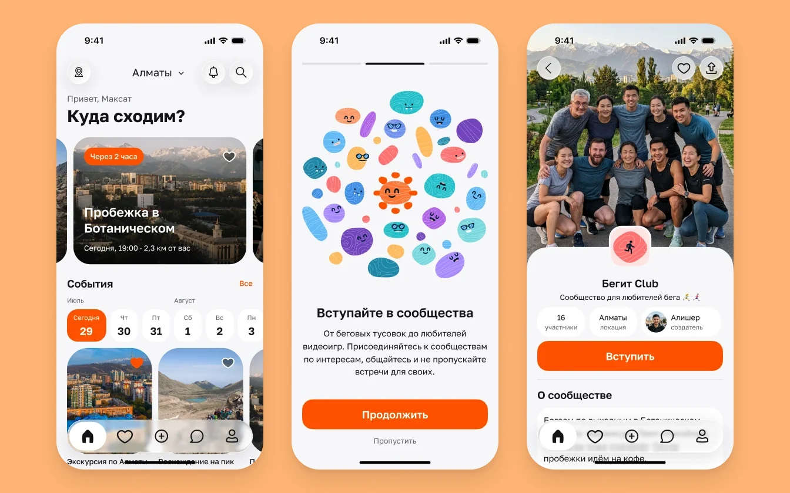
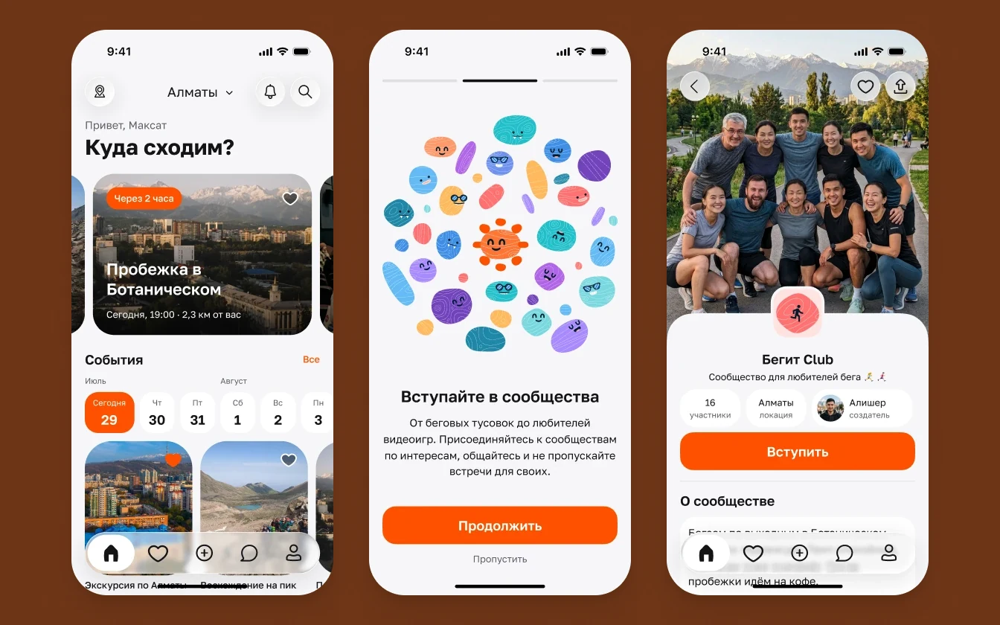
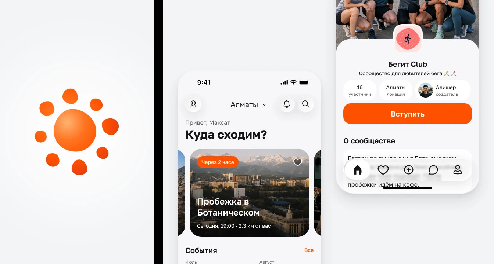
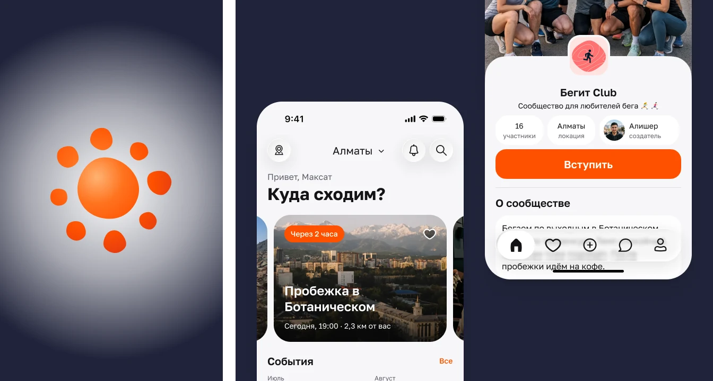
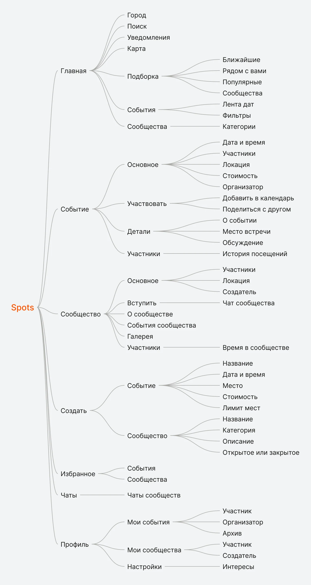
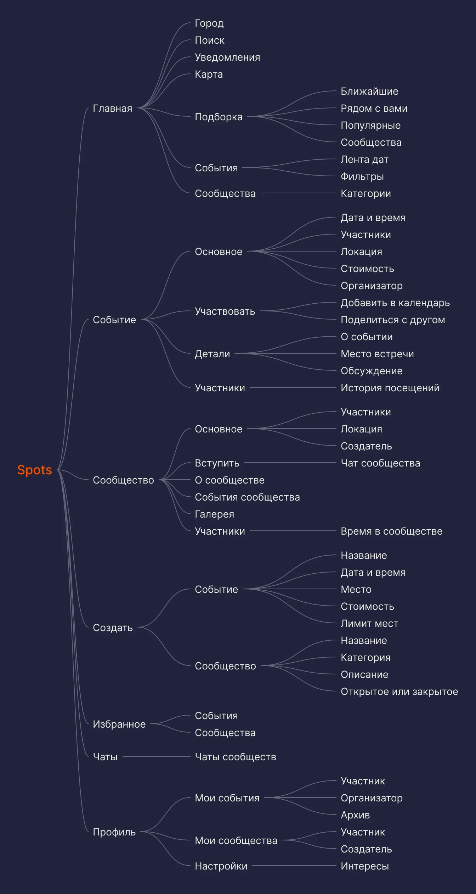
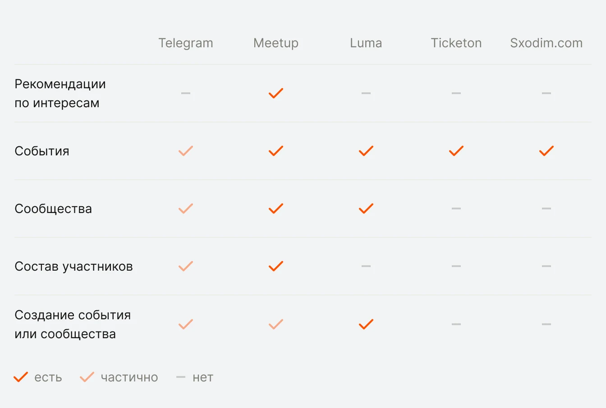
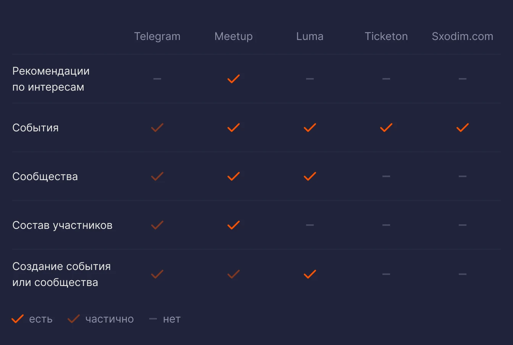
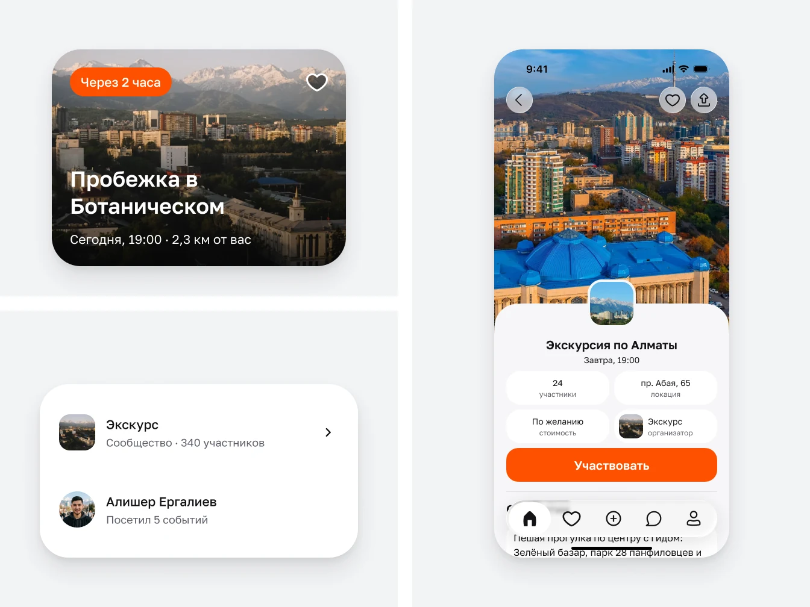
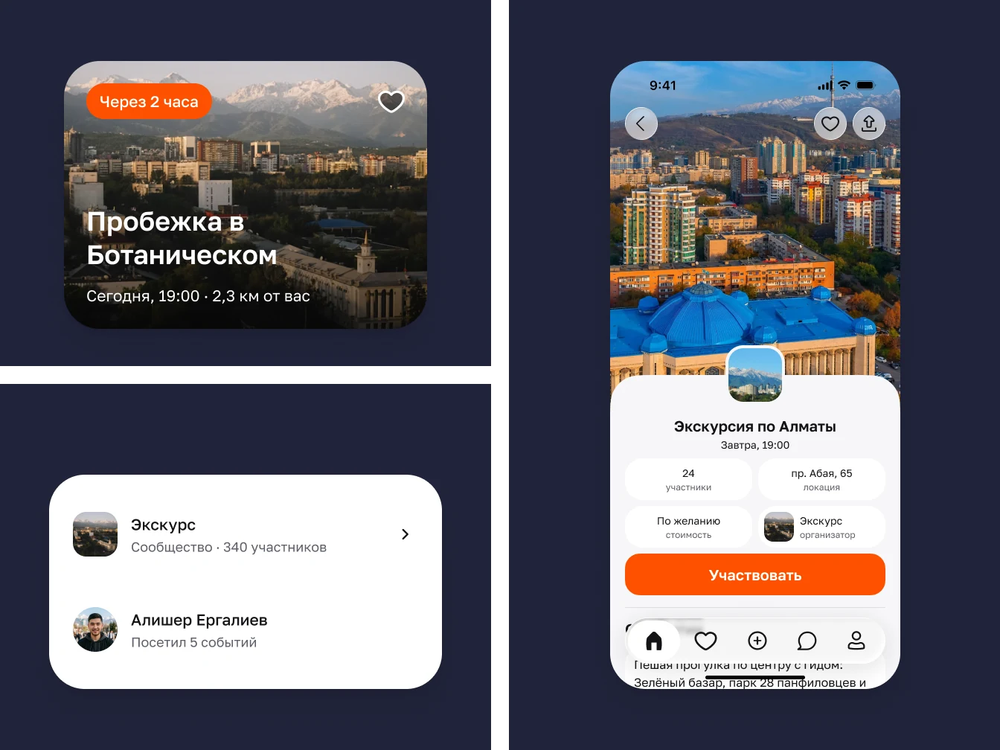

Spots | Сервис для поиска и организации городских событий и сообществ
Spots — приложение для поиска и организации городских событий и сообществ. Я вёл проект от исследования до финальных макетов: изучил рынок, провел глубинные интервью с 10+ респондентами, спроектировал путь пользователя, создал UI-kit, собрал прототип и провёл usability-тестирование на 5 респондентах.


Проблема
Городские события и сообщества помогают людям находить единомышленников, расширять круг общения и заниматься тем, что им интересно.
Однако информация о них остаётся фрагментированной и распределена по Telegram-чатам, Instagram, Facebook, Meetup и другим площадкам.
В результате людям сложно находить подходящие активности, и многие упускают возможности для новых знакомств и увлекательного досуга.
Как я могу помочь горожанам находить интересные активности и компании по интересам?
Задача
Цель SPOTS — стать единой точкой входа в активную городскую жизнь, где можно находить события, присоединяться к сообществам и создавать собственные мероприятия.


Исследование
На этапе discovery использовал Design Thinking и JTBD, чтобы выделить ключевые сценарии: найти, чем заняться на свободных выходных, найти постоянную компанию и собрать людей без переписок и ручных подсчётов.
Гипотезы проверялись в ходе 10+ CustDev‑интервью с жителями города и людьми, недавно переехавшими в него. Среди респондентов были как участники, обычно присоединяющиеся к существующим активностям, так и организаторы, привыкшие самостоятельно собирать людей вокруг своих инициатив.
В ходе интервью удалось выявить пять ключевых барьеров, которые мешают людям чаще участвовать в городских активностях:
«Весь день только на поиски уходит, а потом уже и не хочется никуда»
«Хочется заранее понимать, что там вообще будет и какая атмосфера»
«Сижу с людьми, с которыми малознаком, — скорее всего, мне не очень»
«Разовые штуки — это всегда лотерея, не всегда хочется потом оставаться»
«Приходилось постоянно напоминать о многих вещах: дата, деньги. Некоторые читают и игнорят»
Выяснил, что пользователям важны не только разовые мероприятия, но и сообщества, в которых можно участвовать регулярно. При выборе активности критическую роль играет предсказуемость опыта: возможность заранее понять формат мероприятия, уровень вовлечённости и круг участников.
Эти инсайты легли в основу структуры продукта, которая объединяет ленту событий и сообщества с собственным календарём, списком участников и встроенным чатом.


В рамках конкурентного анализа изучил более 10 решений на рынках event-tech и community platforms.
На основе ранее проведённых интервью сформировал критерии для сравнения. Для сравнительной матрицы отобрал пять наиболее показательных продуктов: Telegram как основной способ поиска событий сегодня, международные платформы Meetup и Luma, а также локальные сервисы Ticketon и Sxodim.com.


Анализ показал, что современные решения на рынке закрывают лишь отдельную часть пользовательских потребностей. Одни сервисы помогают находить события, другие сосредоточены на сообществах или организации мероприятий, однако ни один из них не охватывает все ключевые сценарии одновременно.
Решения
Одним из главных инсайтов исследования стало то, что пользователям часто не хватает контекста перед посещением события. Им важно заранее понимать, что их ждёт на мероприятии и насколько оно соответствует их ожиданиям.
Поэтому дизайн строился вокруг принципа социальной предсказуемости. Вместо абстрактного списка мероприятий пользователь получает достаточно контекста для принятия решения: видит формат события, участников, организатора и связанное сообщество ещё до регистрации.
При проектировании я опирался на паттерны современных социальных и event-платформ: единые механики навигации между событиями и сообществами, высокая информативность карточек, минимальное количество уникальных сценариев и постепенное раскрытие информации по мере вовлечения пользователя.


Для проверки ключевых сценариев собрал интерактивный прототип из 33 экранов и провёл usability-тест с 5 респондентами. Проверял, понимают ли пользователи связь между событиями и сообществами, быстро ли находят нужную информацию и проходят ли основные сценарии без подсказок. Тест помог выявить проблемы в навигации, восприятии участников события и первом знакомстве с продуктом — они легли в основу следующей итерации.
Результаты
Из трёх гипотез одна подтвердилась — люди приходят на события, а остаются в сообществах, одна подтвердилась частично — людей держит авторитет организатора, а опасение, что пользователи перепутают событие и сообщество, не подтвердилось.
10+глубинных интервью
10+конкурентов изучил
33экрана
в прототипе
5респондентов на тесте
Главный вывод: людям нужен не ещё один список событий, а предсказуемость — заранее понимать, что за событие и кто придёт.